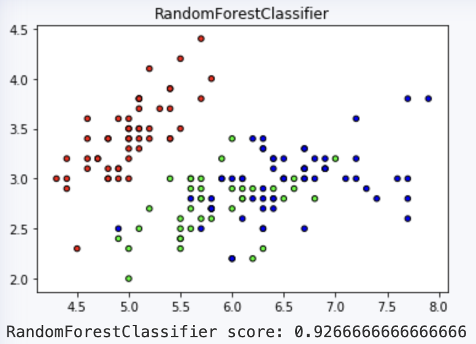
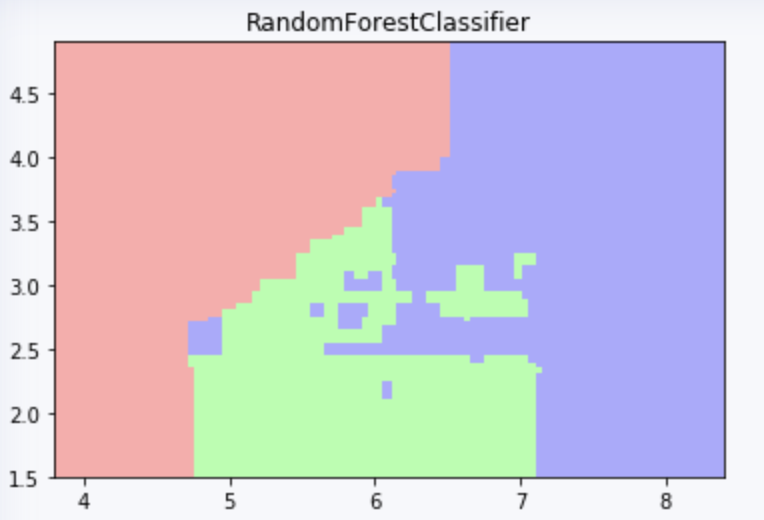
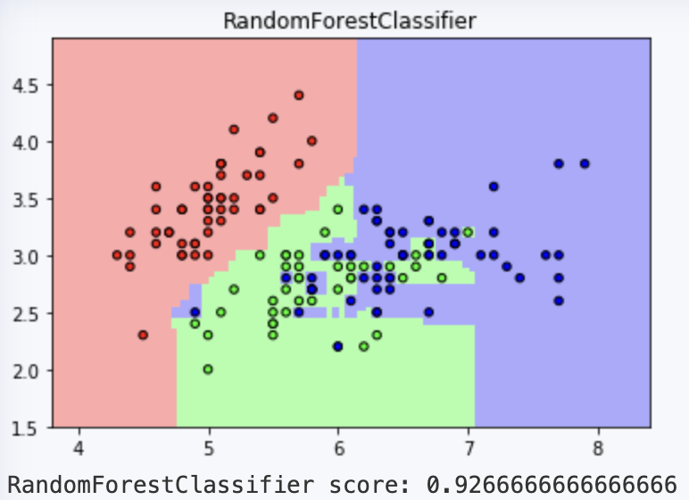
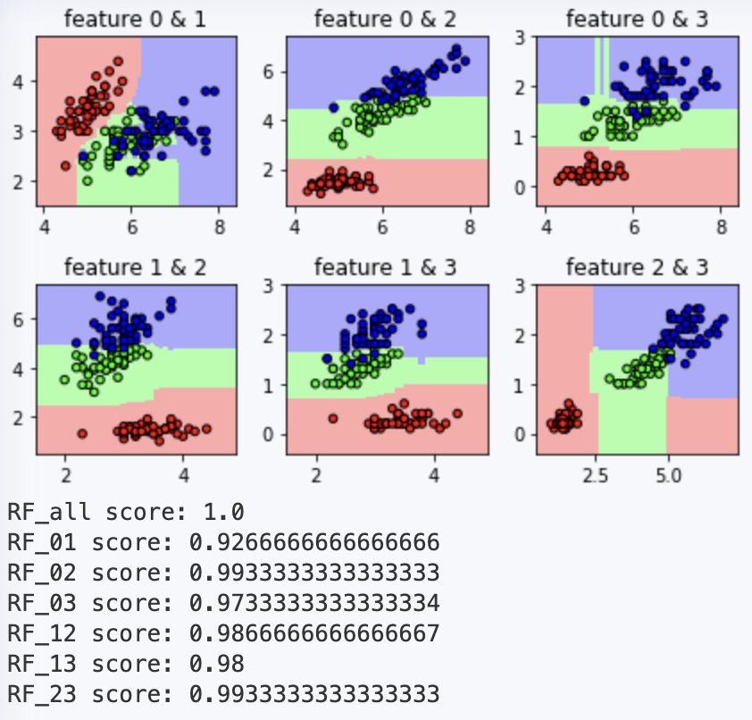

基于scikit-learn的鸢尾花分类及结果可视化教程（随机森林实现）。
随机森林概述
随机森林主要应用于回归和分类两种场景，又侧重于分类。
随机森林是指利用多棵树对样本数据进行训练、分类并预测的一种方法。它在对数据进行分类的同时，还可以给出各个变量的重要性评分，评估各个变量在分类中所起的作用。
随机森林的构建：
首先利用bootstrap方法有放回地从原始训练集中随机抽取n个样本，并构建n个决策树；
然后假设在训练样本数据中有m个特征，那么每次分裂时选择最好的特征进行分裂，每棵树都一直这样分裂下去，直到该节点
的所有训练样例都属于同一类；接着让每棵决策树在不做任何修剪的前提下最大限度地生长；最后将生成的多棵
分类树组成随机森林，用随机森林分类器对新的数据进行分类与回归。
预测结果：
- 对于分类问题，按多棵树分类器投票决定最终分类结果
- 对于回归问题，则由多棵树预测值的均值决定最终预测结果
分类包含两个特征的数据集
本章节末有完整源代码，点此处跳转。以下为代码各部分详解。
导入模块、函数
需要使用到的模块
- numpy：数据处理
- matplotlib：结果可视化
- sklearn：具有各种分类、回归和聚类算法
这里我只导入需要的部分函数
1 | import numpy as np |
构建随机森林
使用RandomForestClassifier函数构建随机森林分类器。
以下为该函数的部分参数解析：
n_estimators: integer (default = 100)
森林中基评估器的数量，也就是树的数量。一般来说，n_estimators 越小越容易过拟合，越大模型效果越好，但达到一定程度时，再增大 n_estimators 所提升的性能非常小，并且需要注意，n_estimators 越大模型的计算量越大。
sklearn 在0.22版本后，n_estimators 的默认值由原来的10增加到了100。n_jobs: integer (default = None)
训练和预测时工作的CPU核心数。默认为 None，解释为n_jobs = 1。如果设置为-1，则使用所有核心进行计算。bootstrap: bool (default = True)
是否使用 bootstrap 方法构建分类决策树。bootstrap 是统计学上一种非常实用的方法，通过在n个样本的集合中有放回的抽取n个样本形成一个数据集。
假设样本集中有n个样本，每次抽中其中任何一个样本的概率都为1/n，即等概率，一个样本在每次抽样中没被抽中的概率为1-1/n。由于是有放回的抽样，每两次抽样之间是独立的，因此对于连续n次抽样，一个样本没被抽中的概率为：**(1−1∕n)ⁿ**当n趋于无穷大时，可得：lim 𝑛→+∞ (1−1∕n)ⁿ = 1∕℮，即数据集中有大约1/3的数据是没有被选取的，称为袋外数据 (out-of-bag data)。
oob_score: bool (default = True)
是否使用做袋外数据进行测试。由于构建分类决策树时使用了 bootstrap 方法，所以在生成一棵树的过程中可能会有袋外数据。因此，可以不划分训练集和测试集，而通过袋外数据评估树的准确度，所有树的准确度取平均值就是该随机森林的性能。但是这不是绝对的， 如果没有数据在袋外，即数据都被某些树使用了，也就不能使用oob数据进行测试了。
1 | RF = RandomForestClassifier(n_jobs=4) |
输出可视化结果
使用 matplotlib 模块画出预测结果的图像，有利于直观地查看分类结果。
本文没有划分测试集进行预测，且本小节侧重于可视化的方法教程，因此此处直接将所有数据按其标签进行可视化。
但是，我们仍可以使用袋外数据评估分类器性能。
1 | cmap_bold = ListedColormap(['#FF0000', '#00FF00', '#0000FF']) |
输出如下
画出特征组合的决策边界
为了进一步了解特征与类别的关系，还可以画出特征组合的决策边界。
首先在一个区域里生成大量的坐标点。这需要使用 np.meshgrid() 函数。给定两个 array，比如 x=[1,2,3] 和 y=[4,5]，np.meshgrid(x,y) 会输出两个矩阵。
1 | # example |
输出如下
1 | [array([[1, 2, 3], |
不妨将区域边界规定为特征值的max + 1 以及 min - 1。同时使每个相邻坐标点之间的距离为 0.02。
将所有坐标点的 x 轴数值记录在矩阵 xx 中，所有坐标点的 y 轴数值记录在矩阵 yy 中。
1 | x_min, x_max = x[:, 0].min() - 1, x[:, 0].max() + 1 |
然后，为了预测这些坐标点对应的分类，需要将所有坐标点储存为一个一维向量，同时向量的每一个元素又包含了该坐标点的x和y轴数值。
因此，使用 np.ndarray.ravel() 函数将 xx 和 yy 矩阵各拼接为一个一维向量，再使用 np.c_() 把对应位置的数值粘合在一起。并把预测结果储存在一个一维向量 z 中。
1 | z = RF.predict(np.c_[xx.ravel(), yy.ravel()]) |
为了能将预测结果对应区域的每一个坐标点，还需要将一维向量 z 转换成 xx 和 yy 的形式。
1 | z = z.reshape(xx.shape) |
最后，使用 ListedColormap() 函数接收颜色的RGB代码，以生成一个自定义的 colormap，pcolormesh() 会根据 z 的值(0, 1, 2) 来选择colormap里对应的颜色进行背景填充。
如果需要限制画图区域，调用 plt.xlim() 和 plt.ylim() 即可。
1 | cmap_light = ListedColormap(['#FFAAAA', '#AAFFAA', '#AAAAFF']) |
输出如下
完整源代码
1 | # coding: utf-8 |
输出结果如下
分类包含四个特征的数据集，并画出所有特征组合的决策边界
因为鸢尾花数据集中只有4个特征，所以只需要将 x = iris.data[:, :2] 改为 x = iris.data[:, :]，即可构建具有四个特征的随机森林。
同时因为可视化更适用于 1～3 维度的数据，所以此处取两个特征为一组，共六组特征组合。
在分类包含两个特征的数据集的代码基础上，写出如下代码
1 | # coding: utf-8 |
输出结果如下
